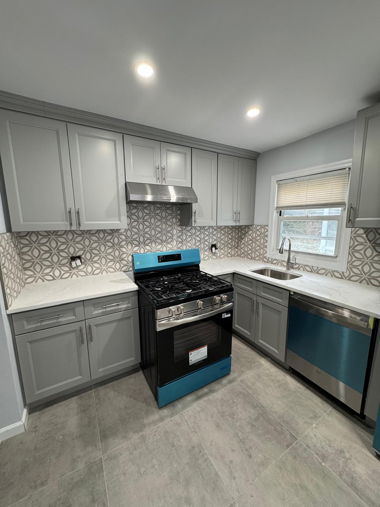
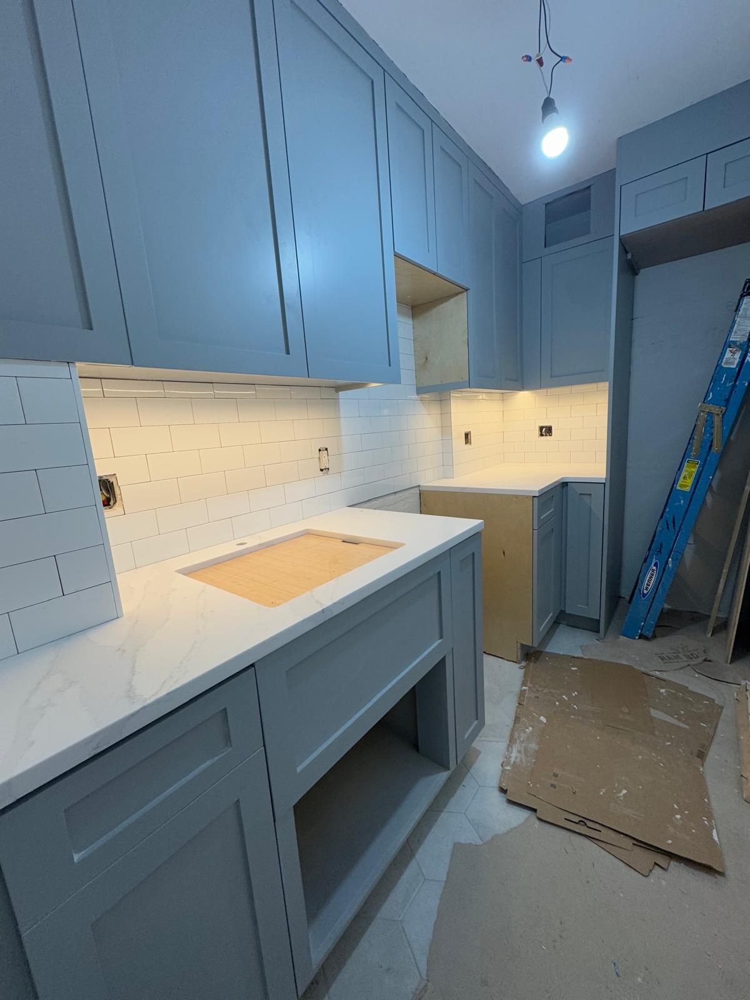
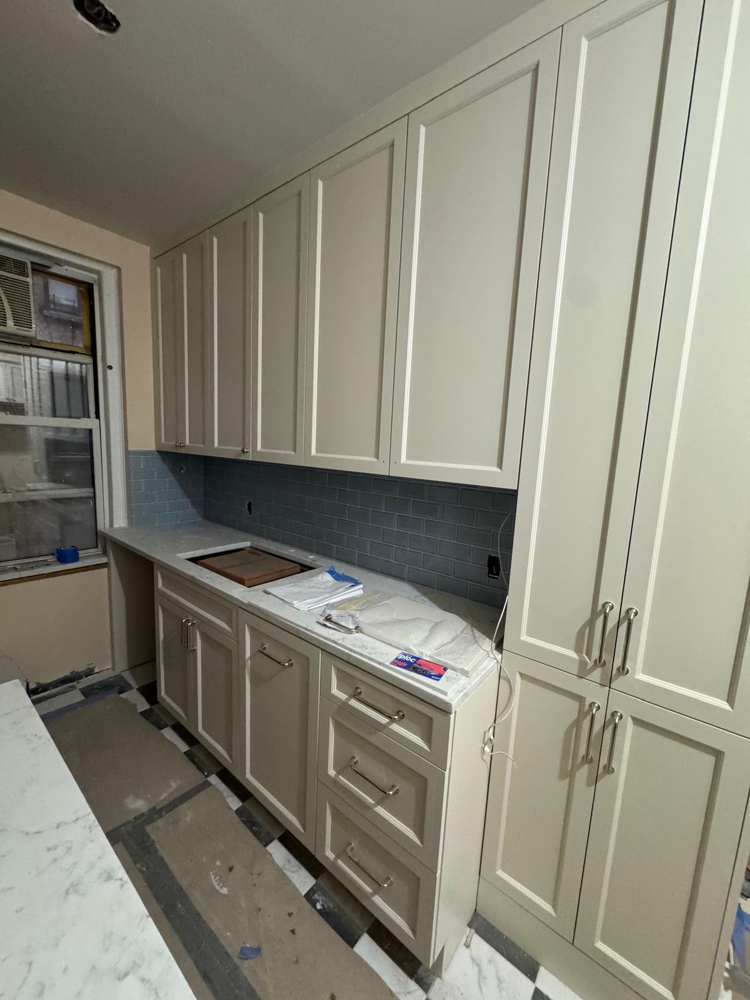
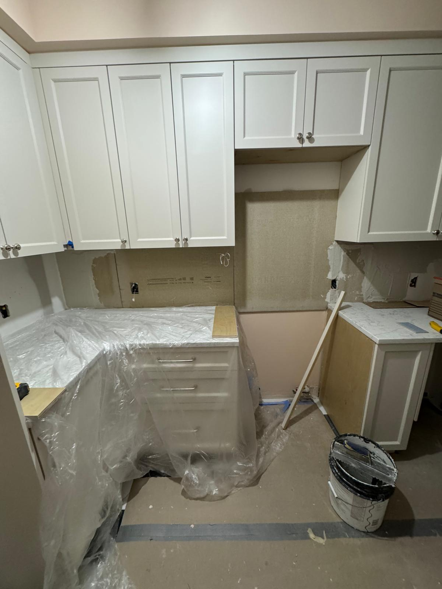
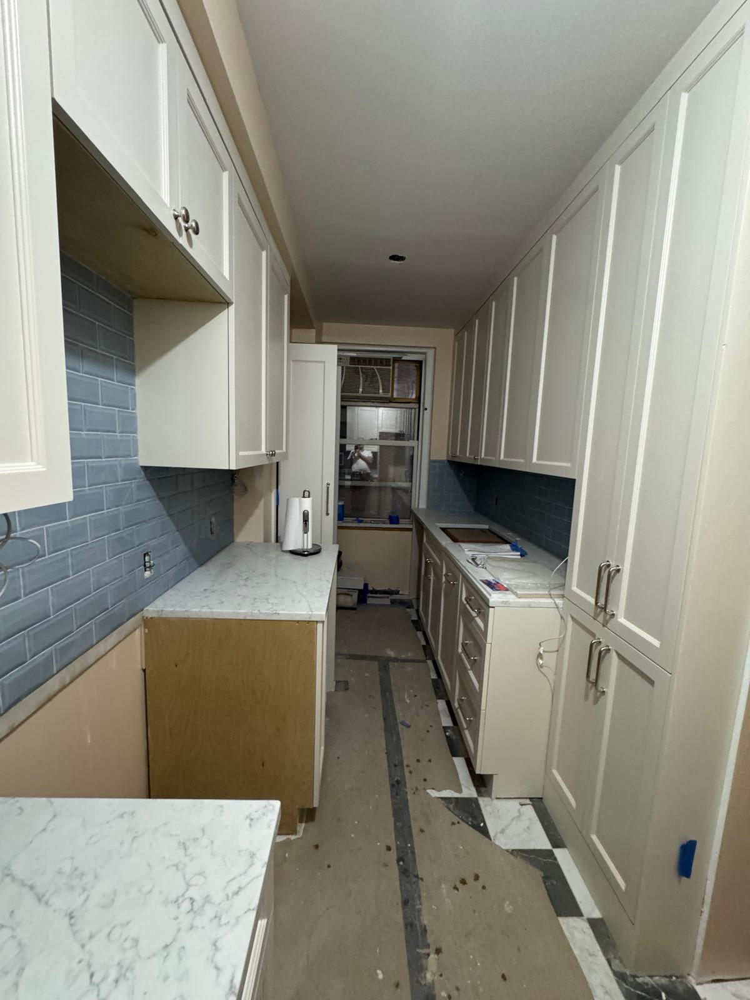

Kitchen remodeling in Manhattan is one of the most rewarding investments an apartment owner can make, but it also comes with a unique set of challenges that homeowners in other parts of the country never have to think about. Between tight layouts, co op board requirements, building coordination, and the logistical puzzle of getting materials up a freight elevator, a kitchen renovation in a NYC apartment demands careful planning and experienced hands. If you are considering a kitchen remodel in your Manhattan apartment, this guide will walk you through the most important decisions, from cabinetry and backsplash to countertops and project coordination.

Renovating a kitchen in a Manhattan apartment is nothing like remodeling a suburban home. Space is limited, every inch of layout matters, and most buildings have strict rules about when and how construction can take place. Co op and condo boards typically require a detailed scope of work, architect or engineer approval, insurance documentation (known as a COI, or Certificate of Insurance), and sometimes neighbor sign offs before you can begin any demolition.
Working with a contractor who understands the nuances of NYC building coordination can save you weeks of delays and thousands of dollars in unexpected costs. At Metro Glass Pro, we handle COI submissions, building management communication, and scheduling around your building's construction hours so you can focus on the exciting part: designing your new kitchen.
Cabinetry is the single biggest decision in any kitchen remodel, both visually and financially. Cabinets typically account for 30 to 40 percent of the total renovation budget, and they set the tone for the entire space. In Manhattan apartments, where kitchens tend to be compact, the right cabinet design can make a small room feel surprisingly open and functional.

Shaker cabinets remain the most popular choice for Manhattan kitchen renovations because of their clean lines and timeless versatility. They work equally well in a prewar Upper West Side apartment and a modern Chelsea condo. White and off white shaker cabinets continue to dominate, but we are seeing more homeowners gravitate toward soft blues, warm grays, and even muted greens for a personalized touch that still feels sophisticated.
For very small galley kitchens, which are common in many Manhattan co ops, extending upper cabinets all the way to the ceiling is one of the best strategies for maximizing storage without adding visual clutter. This approach creates a built in, custom look that makes even a narrow kitchen feel intentional and well designed.
The backsplash is where many Manhattan homeowners choose to make a statement. Because kitchen square footage is limited, the backsplash becomes a focal point that ties cabinetry, countertops, and appliances together. A thoughtful backsplash selection can transform a standard apartment kitchen into something that feels truly custom.

Subway tile remains a classic, and for good reason. It is affordable, versatile, and easy to maintain. However, more homeowners are experimenting with variations like elongated subway tile, stacked vertical layouts, and handmade zellige tiles that add texture and warmth. Geometric patterned tiles are another popular option, especially for homeowners who want to create visual interest without introducing bold color. These patterns catch the light in interesting ways and serve as a subtle focal point behind the range or sink.
Glass tile backsplashes are also gaining popularity in modern Manhattan kitchens, particularly in shades of blue and green that reflect natural light and make small spaces feel more open.
Quartz has become the most requested countertop material in NYC kitchen remodels because it combines the elegance of natural stone with superior durability and zero maintenance. Unlike marble, quartz does not require sealing and resists stains from coffee, wine, and cooking oils. That said, marble countertops still hold a special place in many Manhattan kitchens, especially in prewar apartments where homeowners want to honor the building's classic aesthetic. If you love the look of marble but worry about maintenance, consider using it on a smaller section like an island while opting for quartz on the primary work surfaces.

A full kitchen remodel in a Manhattan apartment typically takes four to eight weeks depending on the scope of work, material lead times, and building access requirements. Understanding the general timeline helps set realistic expectations and reduces the stress of living through a renovation.
The first phase is demolition and preparation, which usually takes three to five days. This includes removing old cabinets, countertops, backsplash, and flooring, as well as any necessary plumbing or electrical rough ins. In a co op or condo, your contractor will coordinate delivery schedules, elevator reservations, and debris removal with building management throughout this phase.
Next comes installation. Cabinet installation typically requires two to three days, followed by countertop templating and fabrication (which may add a one to two week lead time), backsplash tiling, painting, and final fixture installation. Having a contractor who manages all trades under one roof prevents the scheduling conflicts that often derail kitchen projects.
While every project is different, a mid range apartment kitchen remodel in Manhattan typically falls between $25,000 and $60,000, with luxury renovations exceeding $80,000 depending on materials, appliance upgrades, and structural changes. Cabinetry and countertops together usually represent about half of the total budget. One often overlooked cost in NYC apartment renovations is the building's own fees, which can include security deposits, insurance requirements, and after hours access charges. A knowledgeable contractor will help you anticipate these costs upfront so there are no surprises once work begins.

If you live in a co op or condo, your kitchen renovation will need to go through your building's approval process before any work can begin. This typically involves submitting a detailed renovation plan, proof of contractor insurance (COI), and sometimes architectural drawings or an alteration agreement. The approval process can take two weeks to two months depending on your building, so starting early while you are still finalizing design selections is the smartest way to keep your project on schedule. Metro Glass Pro is fully licensed and insured in New York and experienced in navigating the approval process for co ops and condos across Manhattan, Brooklyn, Queens, and beyond.
A well executed kitchen remodel can completely transform the way you experience your Manhattan apartment. Whether you are updating tired cabinets in an Upper East Side co op, refreshing the backsplash in a Tribeca loft, or doing a full gut renovation in a Chelsea condo, the key is working with a team that understands both the craft and the logistics of apartment renovation in New York City.
Contact Metro Glass Pro for a free estimate on your Manhattan apartment kitchen renovation. We handle everything from cabinetry and countertops to tile work and building coordination.
Call us at (332) 999 3846 or email operations@metroglasspro.com
Monday through Friday 8am to 6pm | Saturday 9am to 2pm